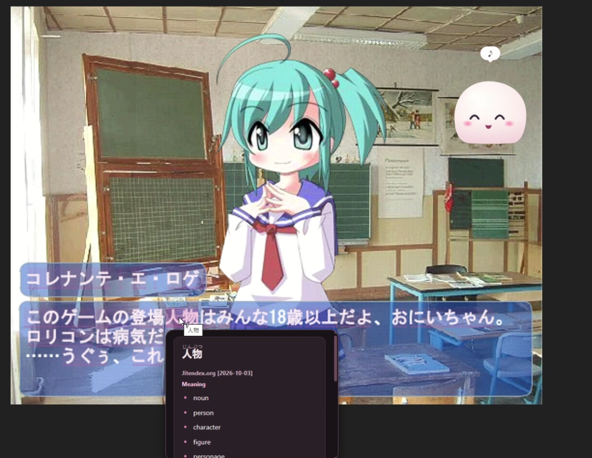
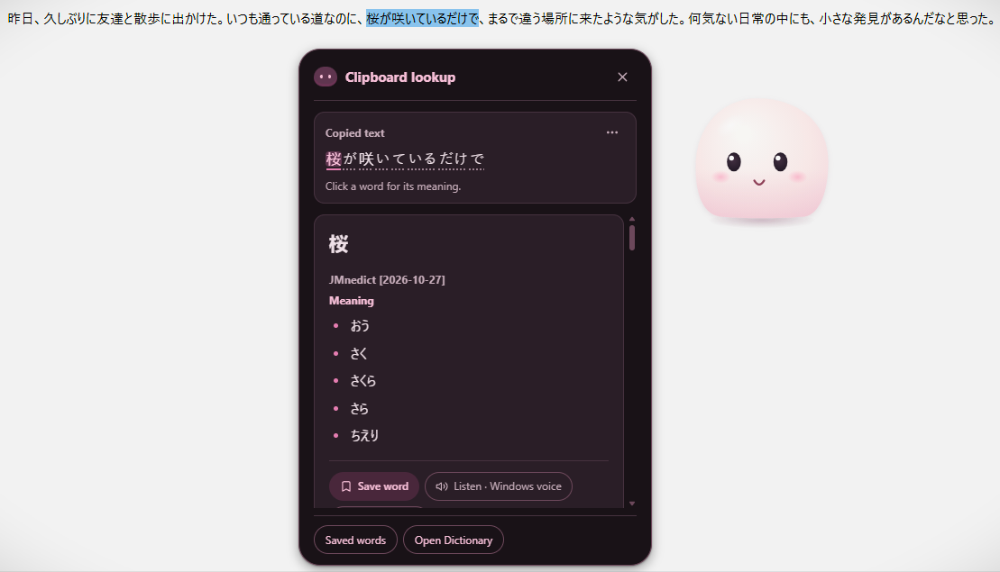
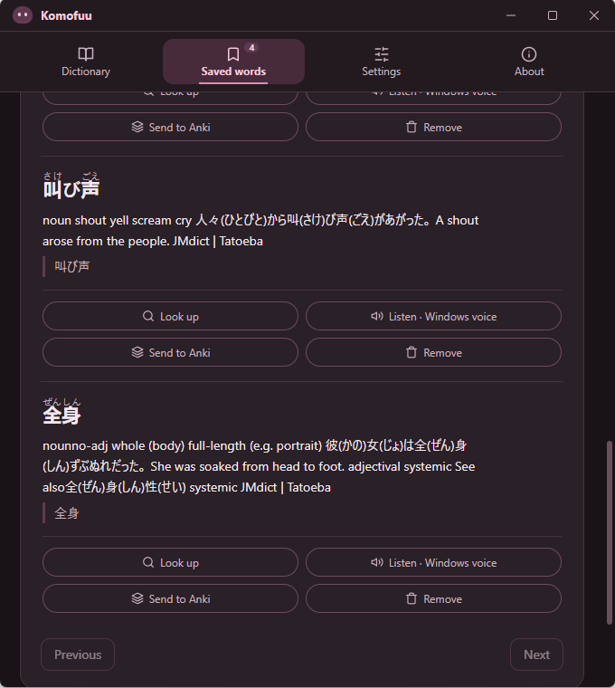

Manga
Scan a page and look up words in speech bubbles, including vertical text.
- Scan the whole page or a smaller area
- Zoom in for small print or furigana
Read manga, visual novels and games in Japanese. Scan what’s on your screen, hover a word for its reading and meaning, and save it for later.
See download options Try the demosOne of Komofuu’s main use cases is reading manga and visual novels in Japanese. Komofuu reads the text on your screen, so you can look up a word without leaving the story.
Scan a page and look up words in speech bubbles, including vertical text.
Scan the text box whenever the line changes and hover words you don’t know.
Menus, quest logs and dialogue, scanned on demand.
Anything with Japanese text on screen, or copied to your clipboard.
Komofuu is a reading aid. It doesn’t include or provide manga, games or dictionaries; read titles you own or can access.
Watch a manga scan, then explore screenshots of visual-novel lookup, clipboard lookup and saved words.



For the words you meet in games, stories, and everyday reading.
Scan your screen on demand, then hover over recognised Japanese text for meanings and readings.
Look up words and explore sentence segments in a conversation-style dictionary window.
Search with dictionaries you download and import. Enable several local dictionaries together.
Enable clipboard lookup, copy Japanese text, and choose words from a sentence to explore.
Keep useful words with their sentence context, revisit your list, and export for study.
See furigana above kanji and listen with an installed Japanese Windows voice.
Windows x64 · OCR runtime included in the installer. No separate Python installation needed.
Komofuu 0.13.4 is being prepared as the first official public release. This page describes that version. The installer will appear here once the official release is published with its required files.
Komofuu_…_x64-setup.exe asset. GitHub’s “Source code” ZIP is not the app installer.Early software: OCR and word segmentation can make mistakes. Komofuu is free to use under its proprietary freeware EULA. See application terms and license scope.
The installer includes the OCR runtime. You do not need to install Python, Rust or development tools.
Download the Windows x64 .exe from a published release and run it. The first installation may need internet for Microsoft WebView2.
Find the small bar at the top centre of your screen. Drag it down to reveal Komofuu. Right-click Komofuu or the bar to open the menu.
Open Dictionary from the menu. Download a Yomitan dictionary from its publisher, then import and enable it in Settings → Dictionaries.
Choose Enable OCR, then press Ctrl + Shift + Space to scan once. Hover a highlight for its meaning. Change the shortcut in Settings.
Download a Yomitan ZIP from its publisher, then add it in Settings → Dictionaries without unzipping. Several dictionaries can be enabled together, including other compatible Yomitan dictionaries beyond these suggestions. Komofuu does not bundle dictionaries or automatically download files.
Jitendex download page ↗
Japanese meanings and examples. Choose the Yomitan format.
JMnedict ↗ · KANJIDIC ↗
Optional proper names and single-kanji details.
BCCWJ frequency page ↗
Supplemental information; a definition dictionary is still needed.
Review each publisher’s terms. Links open external project pages, not rehosted dictionary files. Import instructions →
No Komofuu account is required. Local tools and optional online services have different data flows.
PaddleOCR runs on your computer. Enabling OCR shows a pink border; it waits for your scan shortcut. Continuous local scanning is a separate, optional setting. Saved words, settings and an imported dictionary stay in your Windows profile.
Optional Google Lens scans upload the captured area to Google after a separate permission. This is an unofficial integration and can stop working. Definitions use your imported dictionaries; Listen uses an installed Japanese Windows voice.
Automatic clipboard lookup is on by default unless previously disabled and uses local dictionaries. Music reactions are optional and off by default. Music reactions use output-level measurements, without recording audio or using your microphone.
This page has no analytics, advertising or third-party fonts. It asks GitHub for public release information. GitHub and the website host still receive normal connection information, including your IP address.
Yes, for local OCR and definitions from your imported Yomitan or EDICT2 dictionaries. The OCR runtime is included; download dictionaries yourself. Optional Google Lens, GitHub update checks and opening dictionary project pages need internet. A first install may need to download Microsoft WebView2.
Yes. Reading manga and visual novels is one of its main use cases, and it works with games too. It can scan visible Japanese text, including horizontal and vertical regions. Small text, furigana, artwork, decorative fonts and tilted lettering can still be missed or misread. Try a smaller scan area or zoom in. OCR captures a snapshot; scan again when the screen changes.
Ask Komofuu currently uses dictionary lookups and basic sentence segmentation. It does not generate open-ended AI answers or guarantee full-sentence translations.
Configured release builds can check through Settings → Updates. Checking at startup is optional and off by default. You choose when to download and install. Updates require a valid Komofuu update signature; vocabulary, settings and imported dictionaries are intended to be preserved. Back up important saved words before updating.
Preview installers currently have no Windows publisher signature. Update signing is a separate check and does not remove browser or SmartScreen warnings. A warning is not proof a file is safe or harmful. Verify the official release and checksum; do not disable antivirus or bypass a detection you cannot verify.
The app’s Uninstall and delete app data option removes Komofuu and its local settings, saved words, dictionary and caches for your Windows account. Export your words first if you want to keep them. Exported backups, Anki cards, downloaded installers and shared Windows components stay.
The application source repository is private. Komofuu is free to use under its Proprietary Freeware EULA, published by Luca Andre Ruenholl. This website’s original code and documentation follow the same proprietary distribution policy; see repository licence. Third-party components and dictionary data retain their own licences; see licence scope.
Tell us what happened, your app version and which OCR engine you used. Redact private text from screenshots.